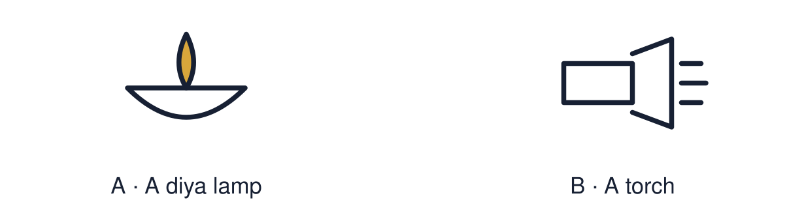

Arrival choices
Previous lesson reminder:

Start with 1 and 2. Try 3 and 4 when ready. Reading and exact scribing are available.
1 What value does Imran’s belief lead to?
Support: Use the reminder strip or talk it through with an adult.
2 Which meaning fits Diwali?
Support: Choose: A festival of lights celebrated by many Hindus, Sikhs and Jains OR A small lamp, often made of clay.
3 Name one thing light can represent at Diwali.
Support: Use the model evidence anchor A or read one relevant card together.
4 Is Diwali celebrated only by Hindus?
Support: Give a reason when ready.
Stretch: use a precise example or explain which detail supports your answer.
Evidence cards
Read, point or listen. Keep the source label with any detail you use.
A Rama and Sita
Many Hindus tell the story of Rama and Sita at Diwali. After Rama rescues Sita from Ravana, people light lamps to guide them home. Light stands for good overcoming evil.
Source: Authored retelling; see Hindu American Foundation, Diwali
Limit: Not everyone who celebrates Diwali tells this story.
B Different communities
Many Sikhs mark Bandi Chhor Divas at the same time, remembering Guru Hargobind’s release from prison. Many Jains remember Mahavira. One festival season holds several meanings.
Source: Authored RE summary
Limit: These are short summaries of long traditions.
C Practices
Families clean and decorate homes, make rangoli, light diyas, share sweets and visit each other. Many Hindus also pray to Lakshmi.
Source: Authored summary; see Hindu American Foundation, Diwali
Limit: Families celebrate in different ways.
D Symbol and meaning
A symbol stands for an idea. Ask: what is it? What does it mean to the people who use it?
Source: Authored classroom resource
Limit: A symbol can mean different things to different people.
Shared investigation
1. Match each symbol or practice to a meaning.
2. Name the evidence card you used.
Work with a partner or adult, or use your own table. One person suggests; the other checks the evidence. Swap after one turn. Passing is allowed.
Move or match the cards
| Cards to use |
|---|
| Sharing sweets with visitors |
| Rangoli by the door |
| Rows of lit diyas |
Possible labels: Community and joy / Good overcoming evil / Welcome
Support: Read one evidence card together. Highlight a useful detail. Rehearse with: At Diwali, ___ is a symbol of ___ because ___.
Further challenge: Explain how one festival season can carry different meanings for Hindus, Sikhs and Jains.
Supported independent task
Complete this route only. Explain one meaning connected to Diwali.
1. Choose one symbol: diya or rangoli.
2. Match it to its meaning card.
3. Draw and label: symbol → meaning.
Support: Read one evidence card together. Highlight a useful detail. Rehearse with: At Diwali, ___ is a symbol of ___ because ___. Complete the organiser one space at a time. At Diwali, ___ is a symbol of ___ because ___.
An adult may read or scribe your exact response. They should not choose the answer.
Standard independent task
Complete this route only. Explain one meaning connected to Diwali.
1. Choose one Diwali symbol or practice.
2. Write: symbol → meaning.
3. Explain the meaning using the story or a card.
Support: At Diwali, ___ is a symbol of ___ because ___.
Check the required evidence and revise one detail.
Stretch independent task
Complete this route only. Explain one meaning connected to Diwali.
1. Choose two symbols and give the meaning of each.
2. Link one meaning to the Rama and Sita story.
3. Explain how Sikhs or Jains give the season another meaning.
Support: Choose the evidence independently. Use the frame only if it helps.
Explain how one festival season can carry different meanings for Hindus, Sikhs and Jains.
Exit ticket
Choose a response mode. You may give your answers privately to an adult.
Name one thing light can represent at Diwali.
Is Diwali celebrated only by Hindus?
Support: At Diwali, ___ is a symbol of ___ because ___.
Further challenge: Explain how one festival season can carry different meanings for Hindus, Sikhs and Jains.